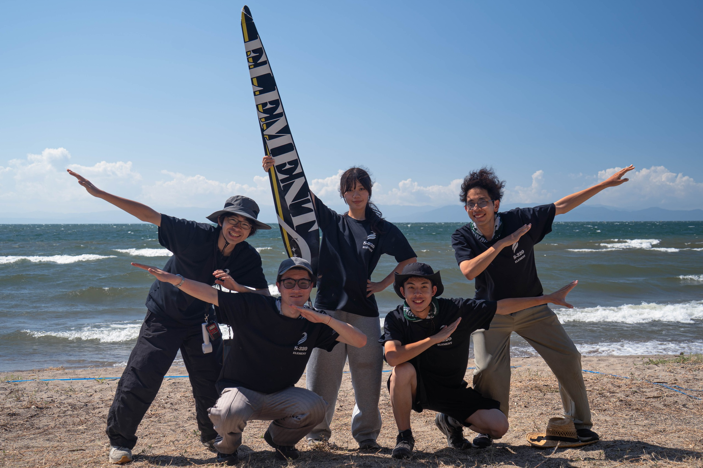
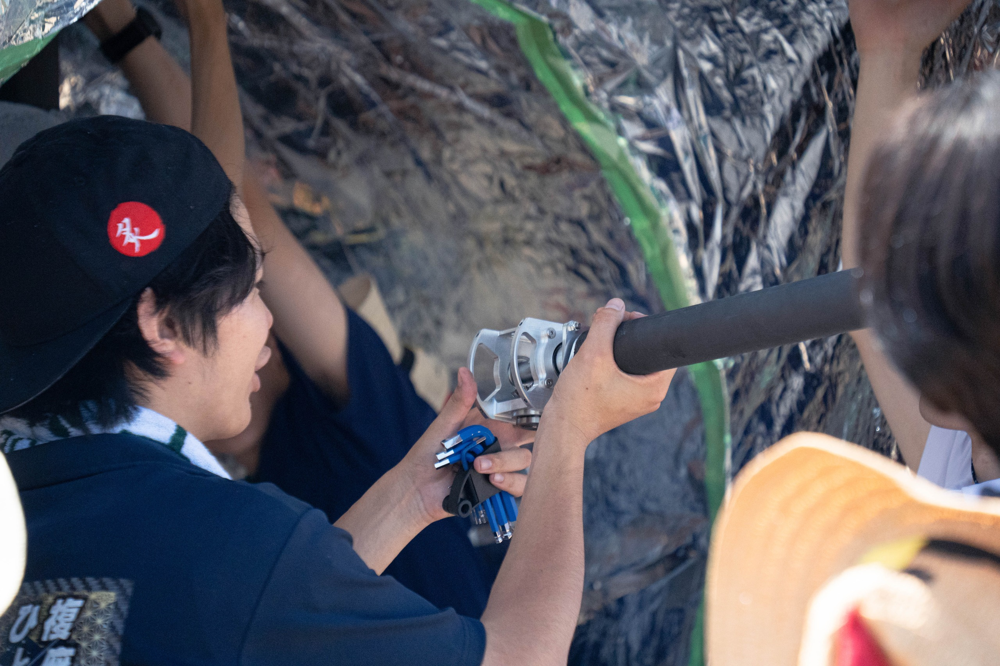
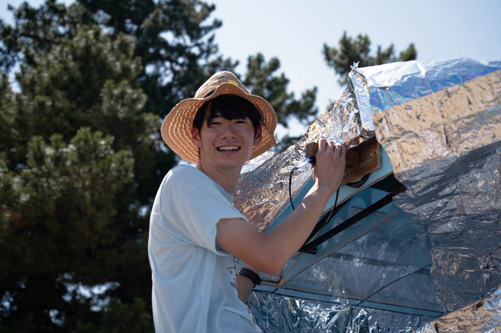
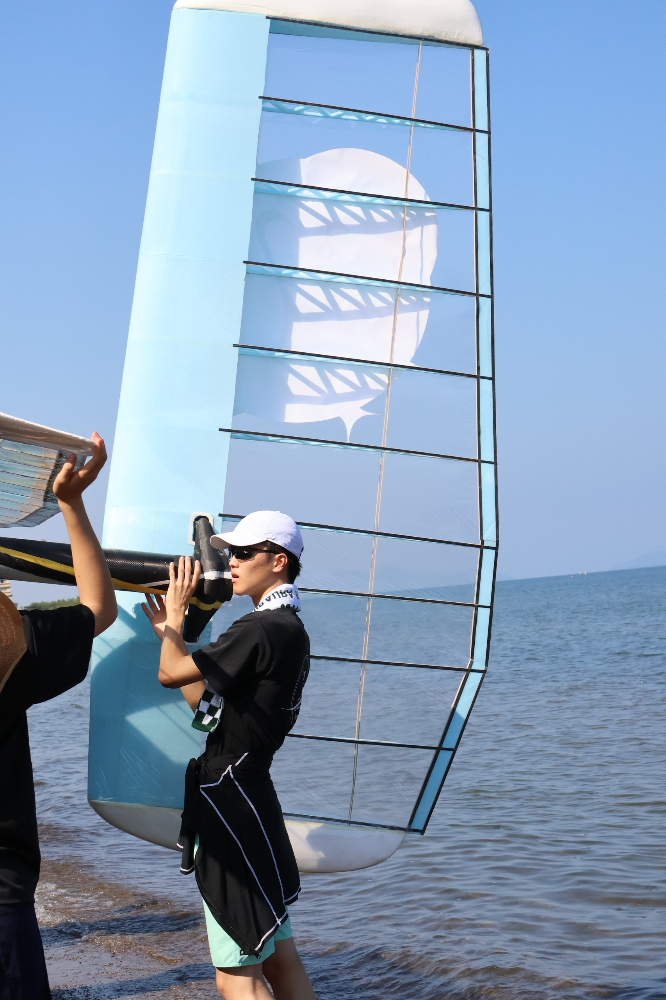

FLIGHT LOG / 2026
飛べた。
それでも、
届かなかった。

FLIGHT LOG / 2026

FLIGHT LOG / THE HANDS
一度飛ぶために、何度もつくる。
この積み重ねが、次の翼の土台になる。



FINANCING THE NEXT WING / 2026
資金計画に記載された概算です。部品の購入量や性能向上値を示すものではありません。公式の資金計画 ↗
FLIGHT FUND / SNAPSHOT 2026.11.09
支援総額 / 2026年11月9日時点目標金額 410,000円 · 支援者 3人
上の数字は自動更新ではありません。今の支援状況はCAMPFIREに掲載されています。支援の申し込みもCAMPFIREで行います。
現在の状況を見る・支援する ↗募集期間 / 2026.11.01 — 11.30 ※支援データの取得日：2026.11.09
WAYS TO JOIN / RETURN GIFTS
返礼品の内容・提供条件は各詳細ページでご確認ください。
END OF THIS PAGE / START OF THE NEXT FLIGHT
支援金額と決済はCAMPFIREの公式ページで確定します。